Bora Mandic
I'm a Stanford mechanical engineering student interested in biotech and neurotech, designing parts for neuroscience and electrical engineering research: a full behavioral rig, head fixation, surgery and histology fixtures, and a leaf sensor mount. Every design here is parametric in Fusion, so parts can be quickly adjusted per experiment or per mouse, and each was printed, tested, and refined in the lab.
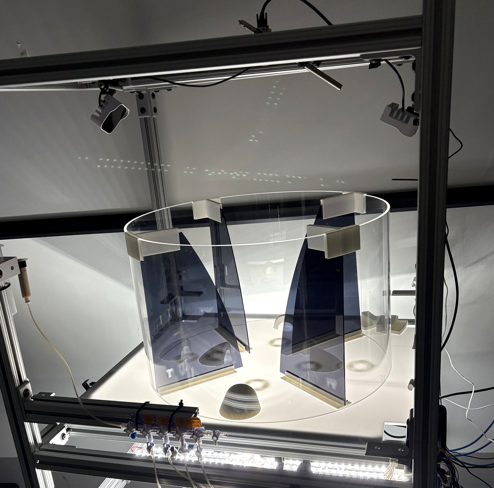
Behavioral rig
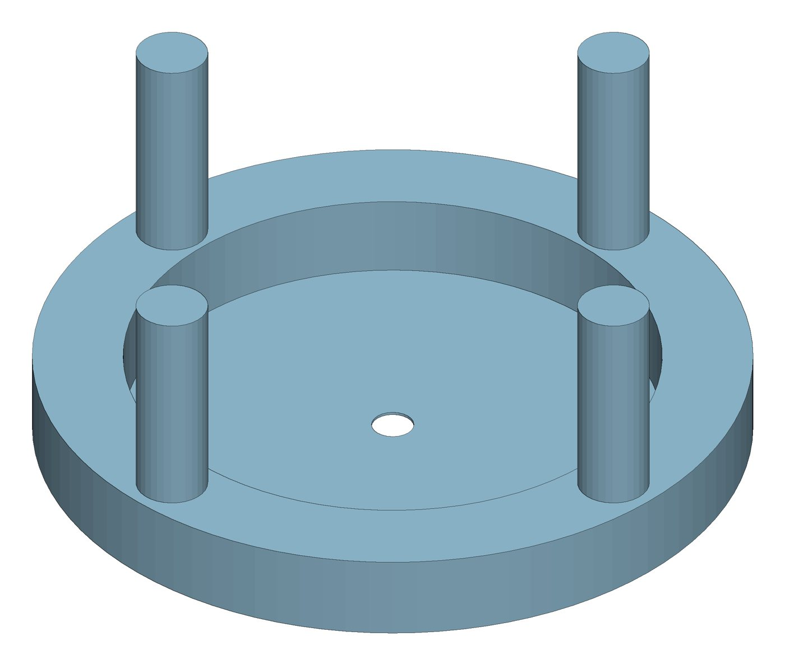
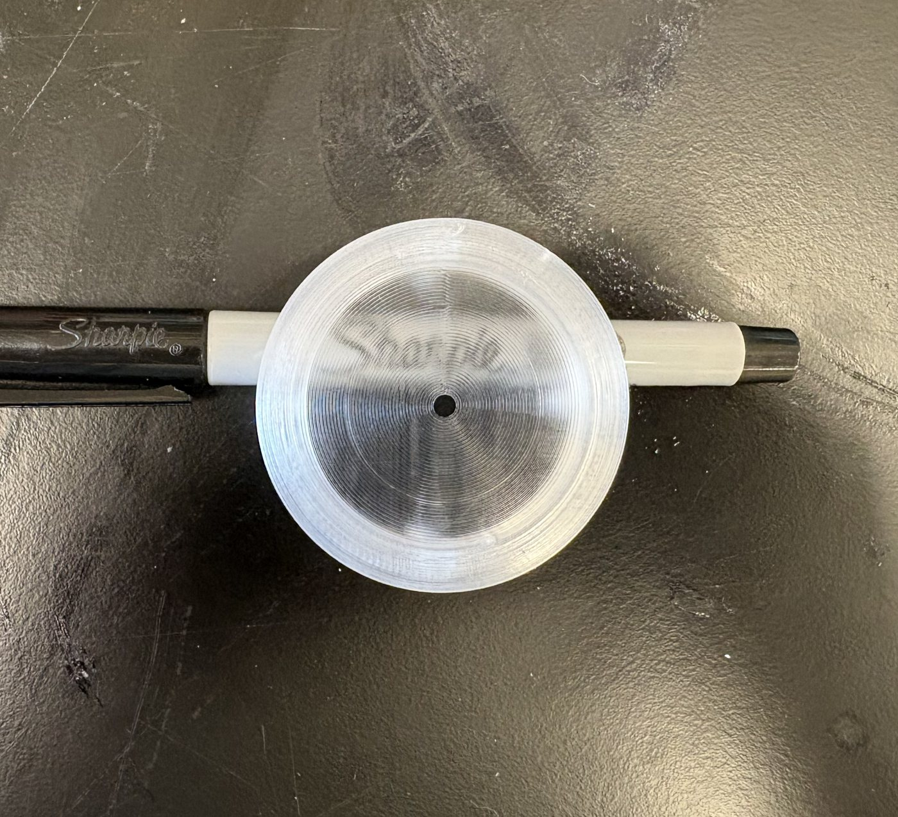
Clear Interlocking Port
Reward port set into the arena floor. Printed clear so the backlit floor shines through and the camera below can capture licks. Locks into the interlocking base. CAD (left), printed part (right).
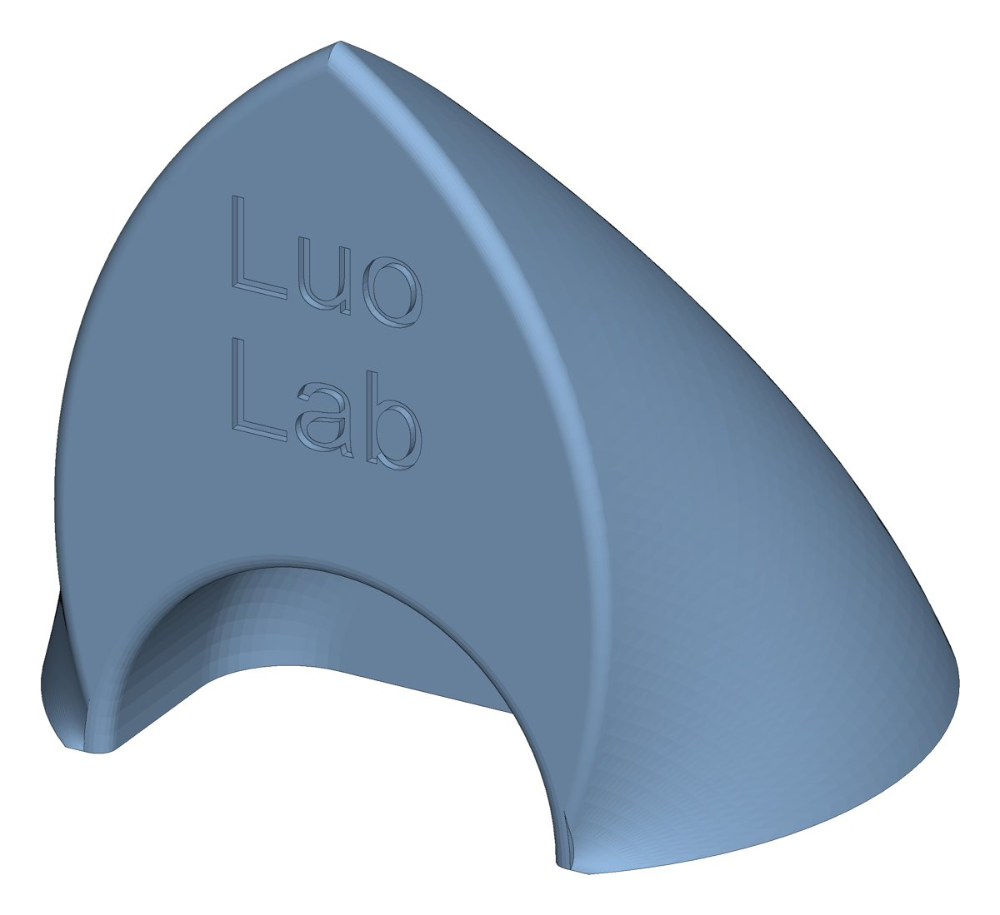
Domed Port
Dome over the port keeps mice from walking across the ports, and shapes the light for the base camera so licks are captured more reliably.
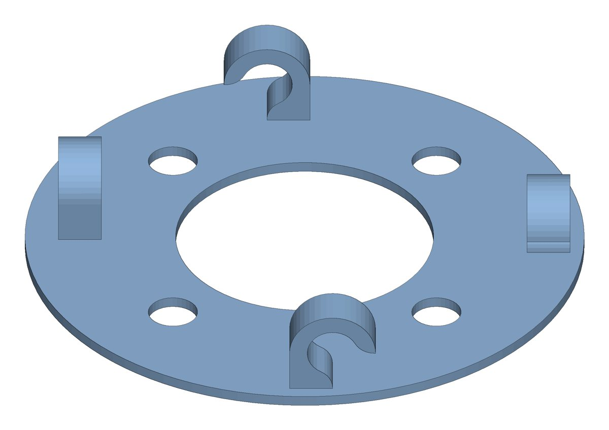
Interlocking Ports Base
Glued to the arena floor. Holes align each port with the floor openings, and built-in hooks route and hold the tubing.
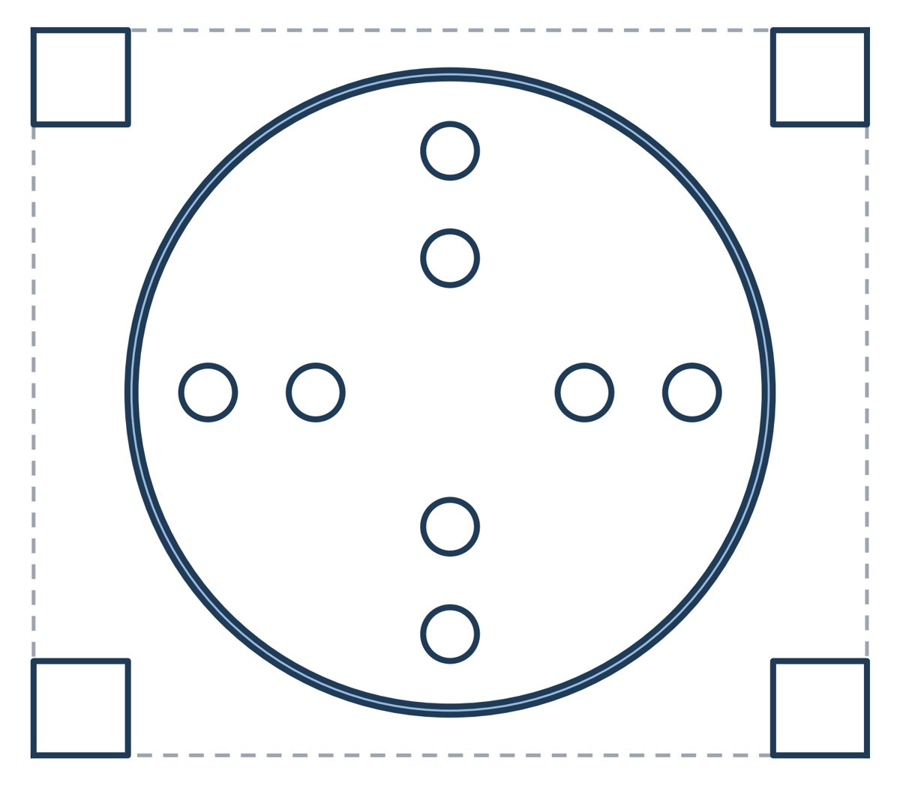
Laser-Cut Arena Floor
Six revisions. An engraved 24-inch ring (shaded) seats the acrylic arena wall, and eight port openings in a cross pattern line up with the interlocking bases.
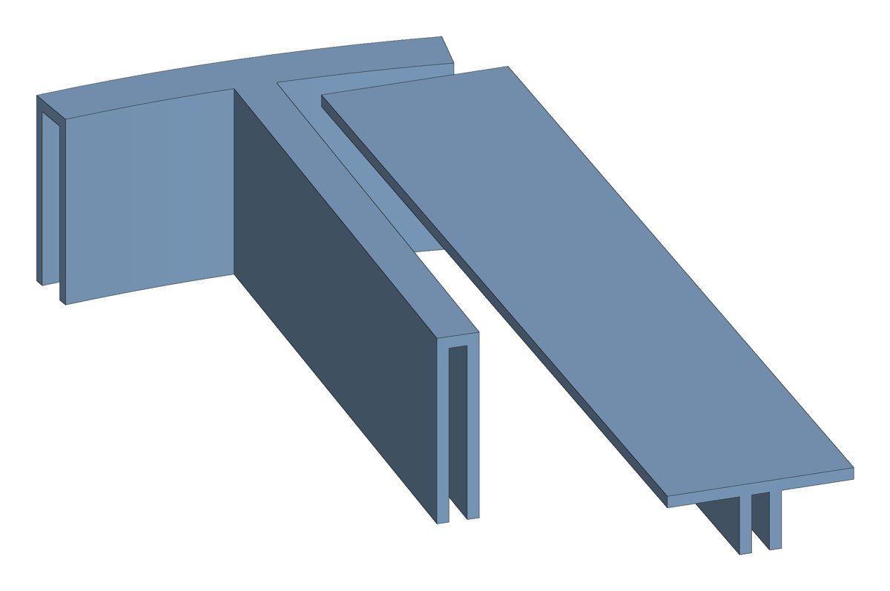
Arena Wall Holders
Hold the acrylic arena walls rigid so they don't bend or give way, even with mice climbing and pushing on them.
Head fixation & surgery
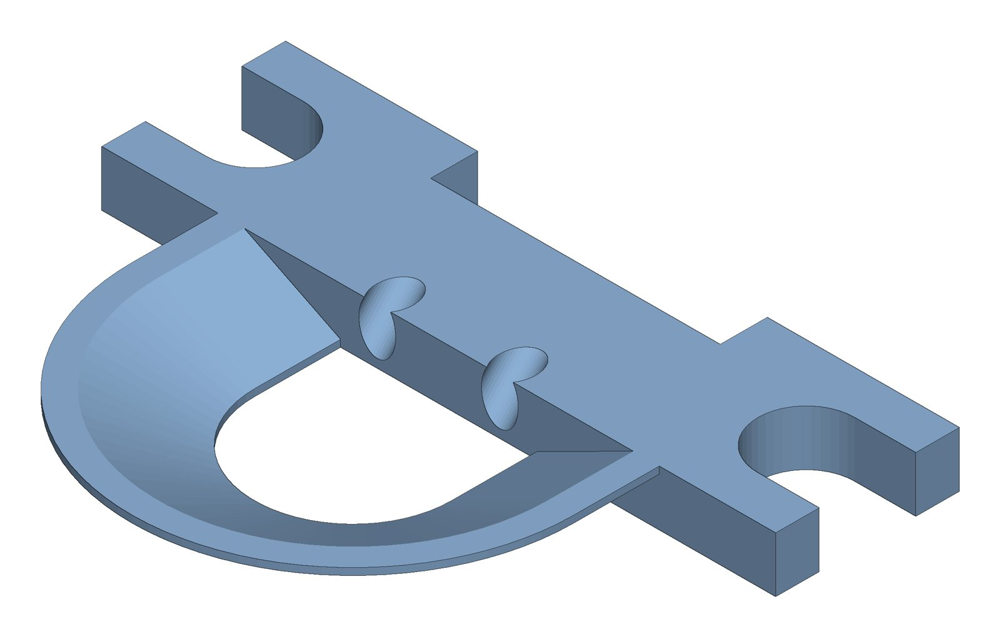
Circular Head Mount
Holds mice head-fixed on the rig while encircling the craniotomy site, which makes surgery easier. The ring forms a well that keeps saline over the skull between behavior sessions, improving animal welfare. Includes two ports, one for a fiber optic and one for a grounding pin.
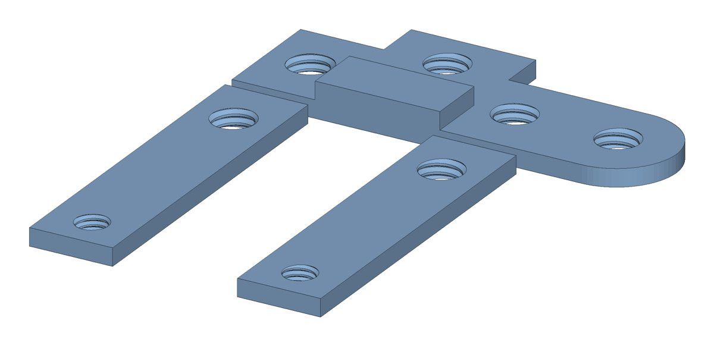
Surgery Mount Holder
Custom-fit to our surgery rig. It holds the head mount in place while it's attached, and several attachment options keep the skull visible during placement.
Lab fixtures
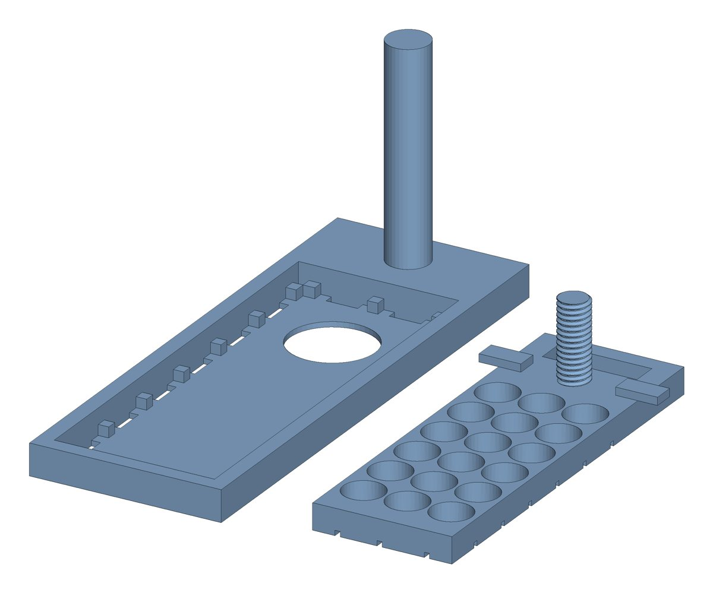
Parametric Plating Aid
Adjustable wells for plating different brain slices onto microscope slides. It made my plating faster and cleaner; I now out-plate a postdoc with over a decade of experience.
Leaf sensor mount
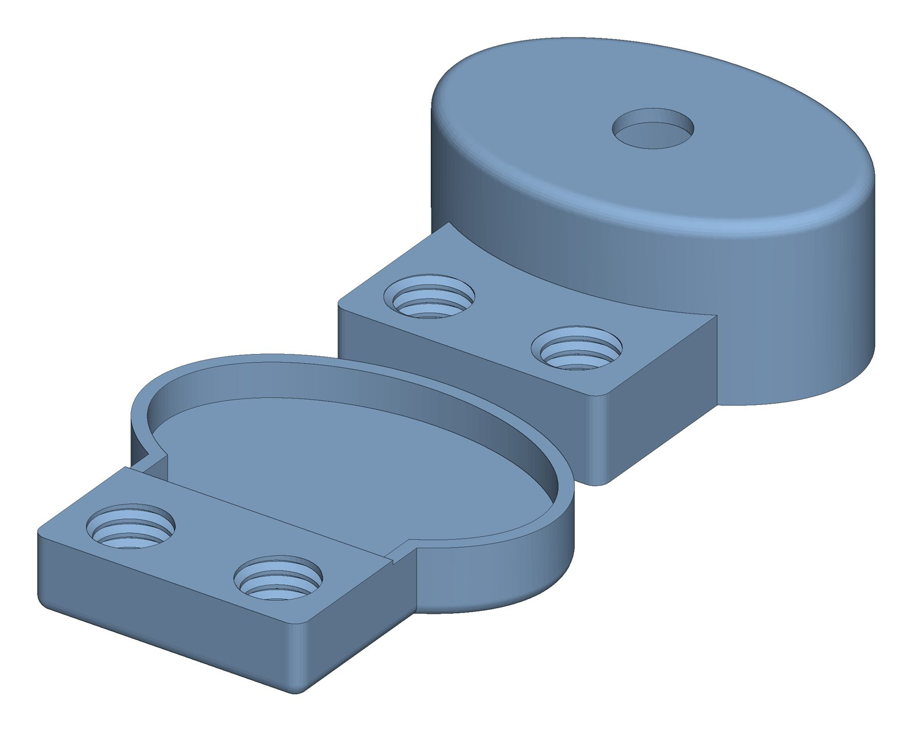
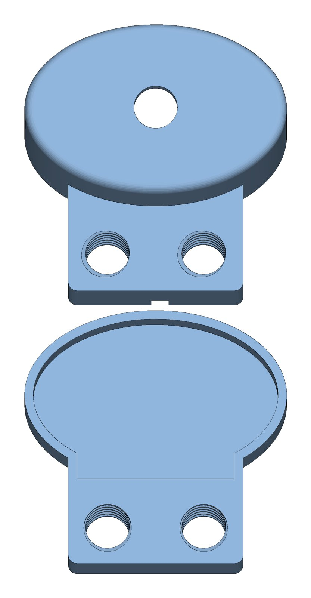
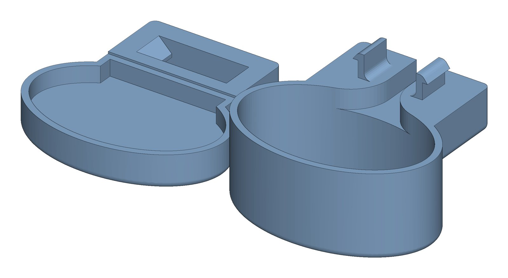
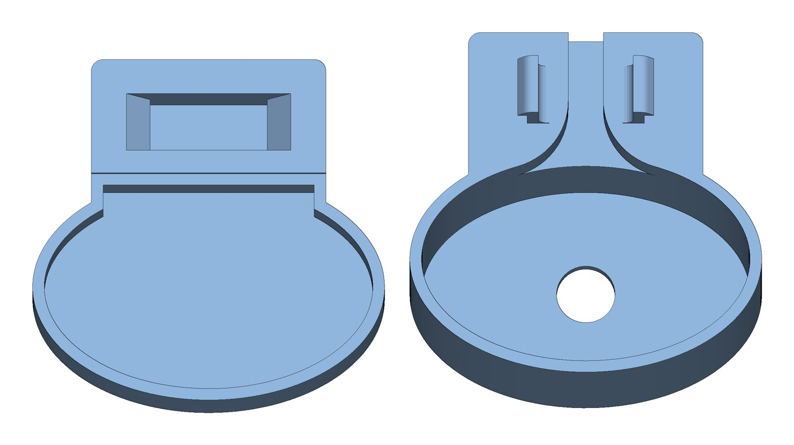
Leaf Sensor Mount
For the S4 Lab: a mount that clips onto the side of a leaf, dimensioned around our specific sensor. The inside is filled with foam, which pushes the sensor against the leaf. Earlier versions screwed on; I built in a clip instead, so no additional hardware or weight is needed. Six versions so far, and the work is ongoing.
Tools
- Autodesk Fusion (parametric CAD)
- FDM printing (Bambu, Prusa)
- Laser cutting
- Arduino
- MATLAB